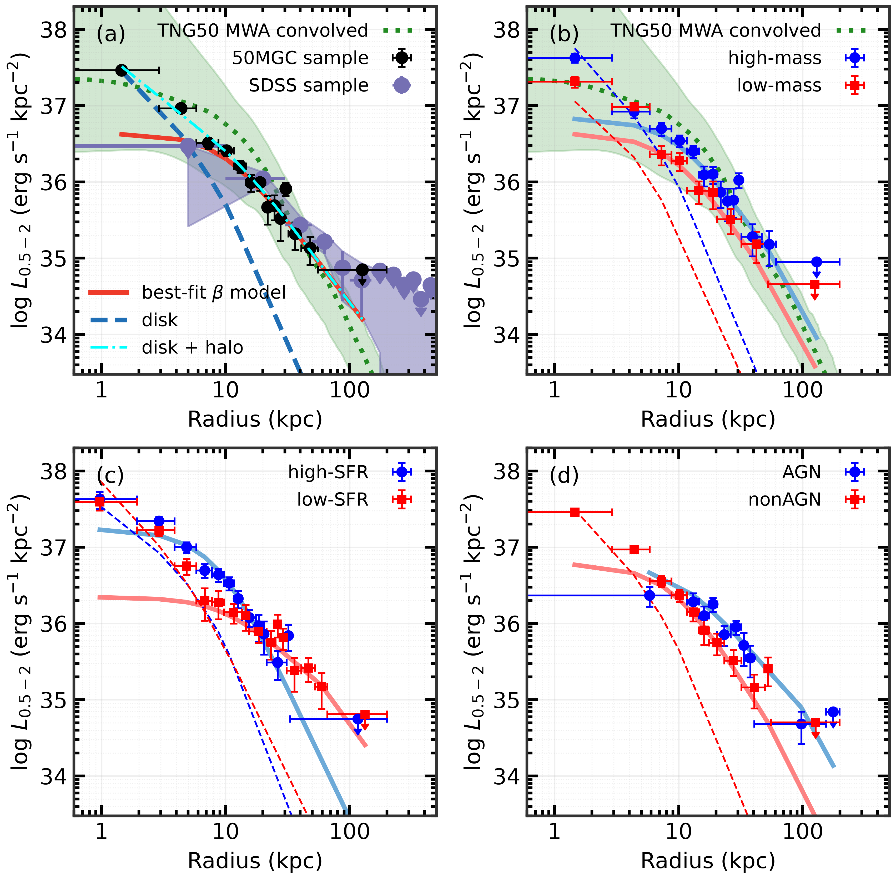

Hot circumgalactic medium
Tracing faint, extended hot gas in galaxy halos through deep X-ray observations and stacking analyses, from low-mass disks to Milky Way-like galaxies.
Read the study ↗

By stacking eROSITA images and spectra of nearby L* galaxies, we detect diffuse X-ray emission extending to at least 50 kpc, revealing faint halo emission that is challenging to detect in individual pointed observations. The stacked spectrum requires a substantial thermal component, supporting the presence of a hot CGM. The radial profiles compare galaxy subsamples with IllustrisTNG predictions, allowing us to investigate how stellar mass, star formation, and nuclear activity relate to the distribution of hot gas.